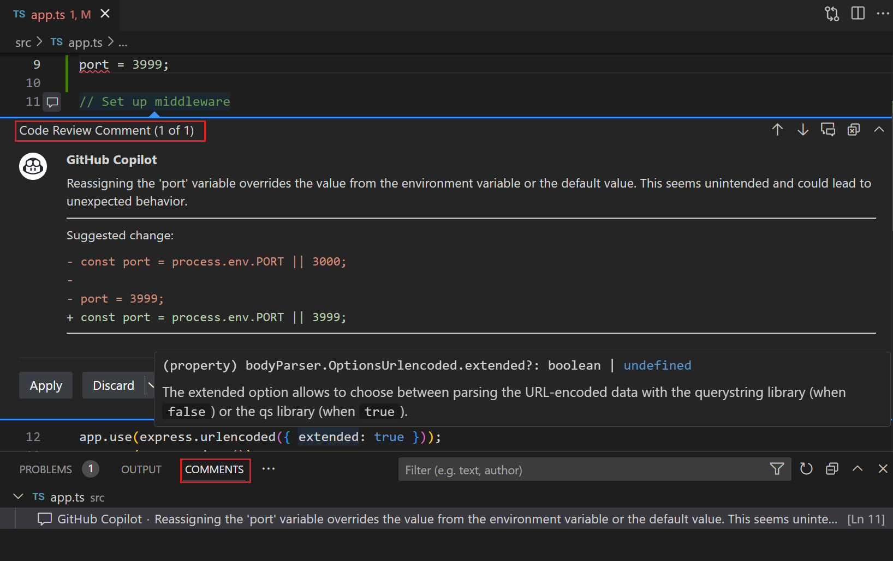
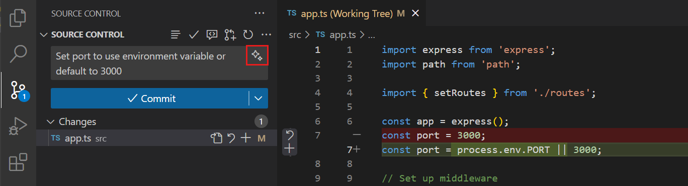
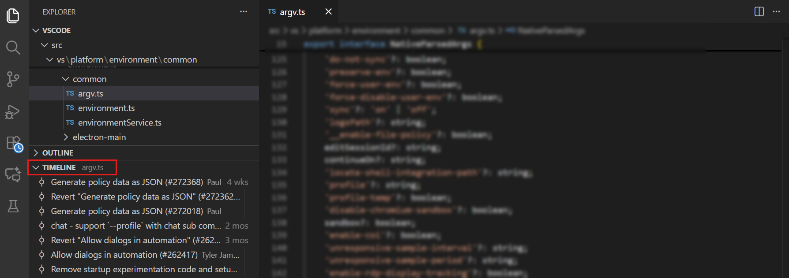

VS Code 中的源代码管理
Visual Studio Code 集成了源代码管理（SCM）功能，让您可以直接在编辑器中操作 Git 和其他版本控制系统。Git 支持是内置的，您还可以从 Visual Studio Marketplace 安装其他 SCM 提供者的扩展。
集成的源代码管理界面通过图形界面提供 Git 功能，无需使用终端命令。您可以执行诸如暂存更改、提交文件、创建分支和解决合并冲突等 Git 操作，而无需切换到命令行。
您在 VS Code 界面中做出的更改会与命令行 Git 操作保持同步，因此您可以根据需要同时使用 UI 和终端。源代码管理界面与命令行协同工作，而非替代它。
先决条件
要在 VS Code 中使用 Git 功能，您需要：
- VS Code 使用您机器上的 Git 安装。安装 Git 2.0.0 或更高版本。
- 当您提交更改时，Git 会使用您配置的用户名和电子邮件。您可以通过以下命令设置这些值：
git config --global user.name "Your Name" git config --global user.email "your.email@example.com"[!TIP]
如果您刚接触 Git，git-scm 网站是一个不错的起点，其中包含一本流行的在线书籍、入门视频和速查表。
开始使用仓库
当您打开一个 Git 仓库的文件夹时，VS Code 会自动检测到它并激活所有源代码管理功能。要开始使用新的或现有的仓库，您有以下几个选项：
- 初始化新仓库：为当前文件夹创建一个新的 Git 仓库。
- 克隆仓库：从 GitHub 或其他 Git 托管平台克隆一个现有仓库。
- 打开远程仓库：通过 GitHub Repositories 扩展，无需将仓库克隆到本地即可操作。
[!TIP]
您可以使用 发布到 GitHub 命令直接将本地仓库发布到 GitHub，该命令会创建一个新仓库并一步完成提交推送。
详细了解克隆和发布仓库。
源代码管理界面
VS Code 通过几个关键界面元素提供 Git 功能。这些 UI 集成使您无需了解终端命令即可执行 Git 操作：
- 源代码管理视图：用于暂存、提交和管理更改等常见 Git 操作的中央枢纽

- 源代码管理图：提交历史记录和分支关系的图形化表示

- 差异编辑器：并排文件比较，便于高效审查更改

- 其他 UI 元素：上下文中的 Git 信息，如编辑器边栏指示器或 Git 追溯注释

常见工作流
提交前审查更改
在提交更改之前，务必对其进行审查以确保准确性和质量。使用 VS Code 的 AI 功能对更改进行代码审查，并在编辑器中获取审查评论和建议。

暂存与提交更改
在源代码管理视图中审查您的更改，然后通过选择每个文件旁边的 + 图标来暂存文件，或一次性暂存所有更改。如需更精细的控制，可以从文件的差异视图中暂存特定的行或选区。

在输入框中输入提交消息，或在提交消息输入框中选择星形图标（），使用 AI 根据已暂存的更改生成提交消息。

详细了解暂存更改与编写提交。
与远程仓库同步
当您的分支连接到远程分支时，VS Code 会在状态栏中显示同步状态，并在源代码管理视图中显示传入和传出的提交。您可以快速同步或执行单独的拉取（fetch）、拉取（pull）和推送（push）操作。

详细了解操作仓库和远程仓库。
解决合并冲突
遇到合并冲突时，VS Code 会在源代码管理视图中高亮显示冲突文件。打开有冲突的文件以查看内联冲突标记。您有几种选项来解决冲突：
- 使用内联编辑器操作直接在编辑器中选择如何解决冲突
- 使用三路合并编辑器并排查看更改和合并结果
- 使用 AI 辅助帮助解决合并冲突

详细了解解决合并冲突。
操作分支、工作树和贮藏
VS Code 支持多种用于管理并行开发工作的流程。
- 在单个工作区内快速切换分支，以处理不同的功能或修复。

- 使用 Git 工作树为不同分支创建独立的工作目录，以便同时操作多个分支。
- 当您需要快速切换上下文时，使用 Git 贮藏临时保存未提交的更改。
详细了解操作分支和工作树。
查看提交历史
审查提交历史有助于了解代码随时间的演变过程。
- 源代码管理图以可视化方式呈现分支结构和提交历史，突出显示传入和传出的提交。
- 资源管理器视图中的时间线视图显示特定文件的提交历史，让您了解其演变过程。您可以筛选时间线以仅显示 Git 提交，或同时包含本地文件更改。

详细了解使用图和时间线视图以及审查更改。
使用 GitHub 拉取请求和议题
VS Code 与 GitHub 集成，可直接在编辑器中提供拉取请求和议题管理。安装 GitHub Pull Requests and Issues 扩展后可以：
- 创建、审查和合并拉取请求
- 查看和管理议题
- 在不离开 VS Code 的情况下评论和批准 PR
- 检出 PR 分支并在本地审查更改
详细了解在 VS Code 中使用 GitHub。
其他源代码管理提供者
VS Code 支持多种源代码管理提供者。虽然 Git 支持是内置的，但您可以安装扩展来支持其他版本控制系统，如 Azure DevOps、Subversion 或 Mercurial。
在扩展视图（kb(workbench.view.extensions)）中通过搜索 @category:"scm providers" 浏览可用的 SCM 提供者扩展。
后续步骤
- 源代码管理快速入门 - 快速开始在 VS Code 中使用 Git 源代码管理
- 入门视频 - Git 版本控制 - 概述 VS Code Git 支持的入门视频
- 分支和工作树 - 了解分支管理、Git 工作树和贮藏操作
- 仓库和远程仓库 - 了解克隆、发布以及与远程仓库同步
- 使用 GitHub - 了解如何在 VS Code 中操作拉取请求和议题
- 故障排除 - 通过输出日志和跟踪日志诊断并解决 Git 问题
- VS Code 中的 Copilot - 探索 Git 工作流之外的更多 AI 驱动功能